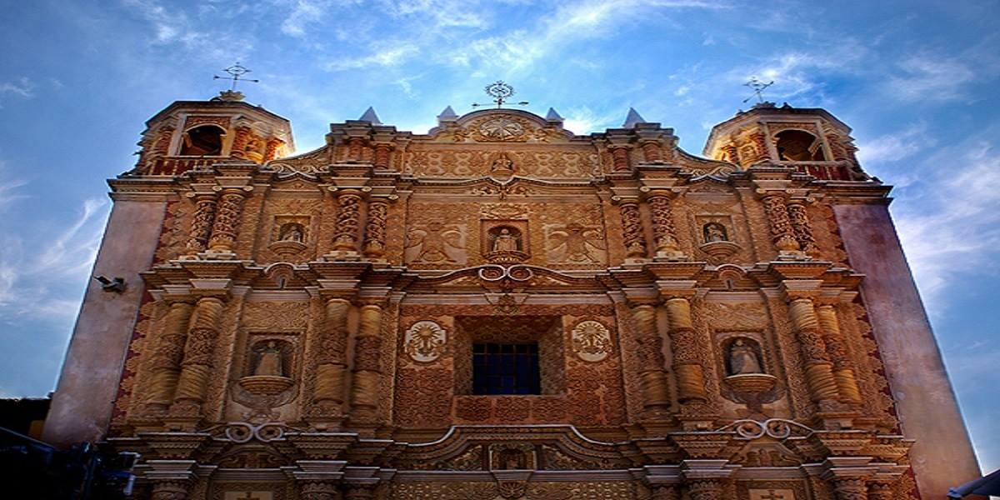
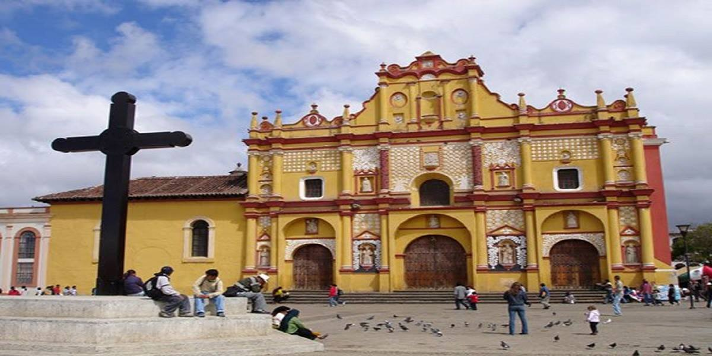
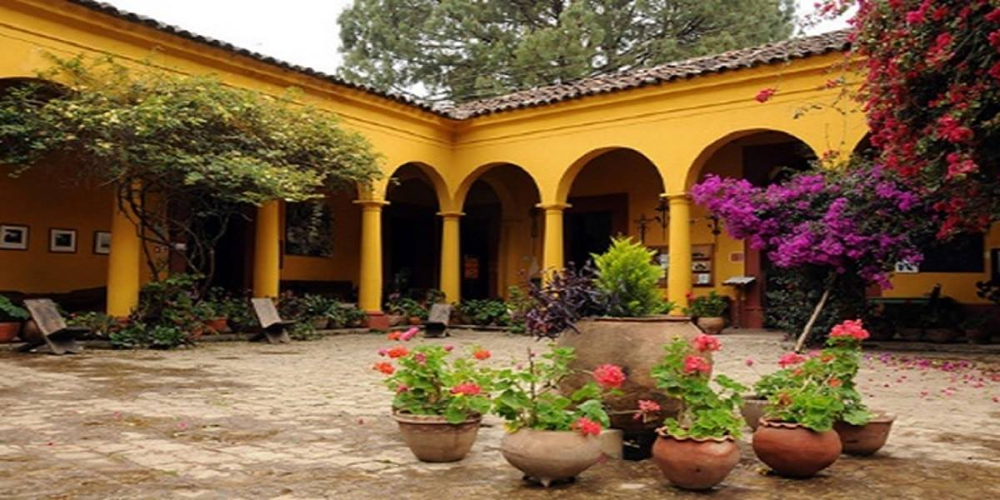
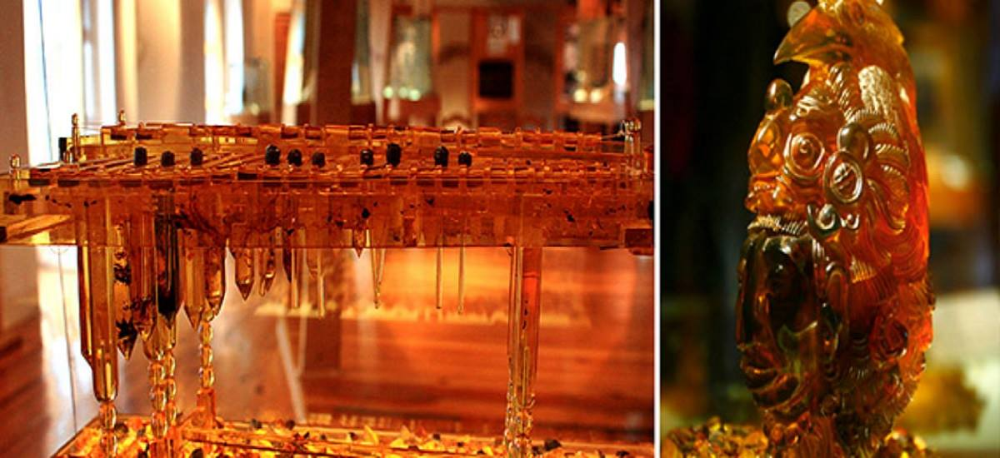
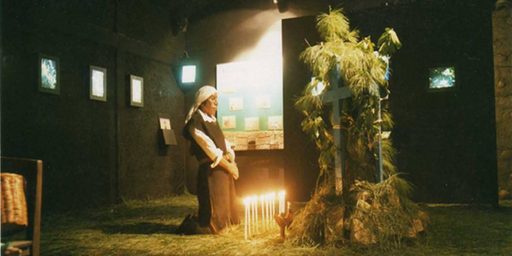
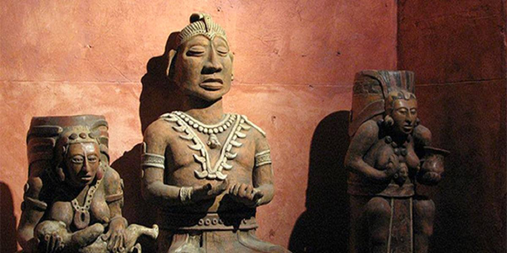

Templo y ex convento de Santo Domingo
Construido entre 1547 y 1551 por la orden de los dominicos, su estilo es barroco colonial. Agrietado tras un temblor en 1902, el templo fue restaurado en 1975 y su fachada de nuevo totalmente restaurada en 2006. Es esta fachada lo más sobresaliente del templo con una muy elaborada ornamentación, sus tres calles verticales, su iconografía con motivos orgánicos, escultura y relieve. Al interior su púlpito tallado en madera dorada es muy llamativo.

Catedral de San Cristóbal de las Casas
Ubicada en el centro de la ciudad, su primer p árroco fue fray Bartolomé de las Casas, defensor de los indios. La diócesis fue erigida el 19 de marzo de 1539, durante el papado de Paulo III. Tras las de Tlaxcala, México, Morelia y Oaxaca es la quinta diócesis más antigua de los Estados Unidos Mexicanos.

Museo Na-Bolom
Na Bolom es un museo su nombre viene del idioma maya tzotzil y quiere decir Casa del Jaguar. En el principio la casa, que fue construida en el 1898, era un seminario católico, más adelante fue la casa del arqueólogo danés Frans Blom(1893-1963) y de su esposa, la antropóloga y fotógrafa Gertrude Duby de Blom (1901-1993). Na Bolom fue el primer espacio que abrió sus puertas a visitantes y a la población para visitar sus salas de exposición con arqueología maya, etnografía lacandona, arte sacro chiapaneco y guatemalteco, arte popular chiapaneco y artes plásticas.

Museo del ámbar
El Museo del Ámbar de Chiapas se inaugura el 4 de diciembre del a ño 2000. Es el único en su tipo en México y cuenta con más de 300 piezas en exhibición. El ámbar es la gema más característica de Chiapas, utilizándose a través de la historia como ofrenda, para protección, con fines medicinales, para elaborar amuletos, joya y en objetos de arte.

Museo de la medicina maya
Las exposiciones del museo están enfocadas a la medicina, las hierbas y los rituales de curación tradicionales de los mayas, muchos de los cuales siguen siendo practicados hoy en día por los indígenas mayas que viven en las aldeas del altiplano alrededor de San Cristóbal. Su huerto cuenta con una gran variedad de plantas medicinales que incluso ahora se siguen utilizando. Y, si lo deseas, podr ás adquirir productos en su farmacia o solicitar curaciones de cuerpo y alma, limpias o un ba ño temazcal.

Museo mesoamericano del jade
EL JADE es una mística piedra preciosa que para los pueblos antiguos de Mesoamérica, era símbolo de inmortalidad, eternidad, poder, amor; lo más precioso de la vida. En San Cristóbal de Las Casas, están abiertas las puertas de un recinto dedicado a exhaltar la belleza y la historia, a través del arte tallado en la divina piedra conocida como Jade Una de las partes culminantes de la visita al museo es la admiración de la réplica del Mausoleo de Kinich Janab Pakal, el onceavo Gobernante Maya de la antigua ciudad que hoy conocemos como Palenque, en el cual el cuerpo del personaje luce con todas sus joyas de jade y la indumentaria de la época, en el momento de su funeral en el año 683 de nuestra era cuando muere como gobernante y es recibido en este colorido sepulcro por los Bolontiku, los nueve señores de la noche, para convertirse también en Dios.
 Hotel Santa Fétú mejor opción
Hotel Santa Fétú mejor opción